Biographie professionnelle
Géomaticien & Ingénieur SIG | Construire l'espace, cartographier l'avenir
Géraud Finangnon AIDOFI est un professionnel béninois dont la trajectoire incarne une vocation précoce pour les sciences de l'information géographique et une détermination sans faille à maîtriser les outils de l'innovation spatiale. Né et élevé au Bénin, il développe très tôt un attrait singulier pour la compréhension des dynamiques territoriales, la modélisation de l'espace et les technologies numériques permettant de transformer des données brutes en connaissances décisionnelles. Cette curiosité naturelle le conduit vers la géomatique, discipline transversale à la croisée de la géographie, de l'informatique et de la topométrie, dans laquelle il s'est distingué par sa rigueur analytique et sa capacité à produire des livrables spatiaux de haute tenue professionnelle.
Son parcours académique et professionnel se caractérise par une progression méthodique, jalonnée de formations techniques de haut niveau, de missions terrain concrètes et d'engagements qui transcendent le cadre strictement scolaire. Géraud ne se contente pas d'acquérir des compétences : il les opérationnalise, les transmet et les met au service de sa communauté. C'est cette synergie entre expertise technique, engagement citoyen et vision stratégique qui constitue la signature de sa trajectoire professionnelle et personnelle.
Depuis ses premières manipulations de logiciels SIG jusqu'à ses analyses spatiales avancées et ses missions de terrain, Géraud a édifié un profil complet de géomaticien, apte à intervenir à chaque maillon de la chaîne de traitement des données géographiques : de l'acquisition terrain à la production de cartographies thématiques, en passant par le traitement analytique et la modélisation prédictive. Son histoire est celle d'un jeune Africain qui, par l'excellence et le travail, s'approprie les technologies de l'information géographique pour contribuer au développement territorial de son pays et du continent.
Son parcours académique suit une progression cohérente et maîtrisée. Il débute dans le génie civil, obtenant un baccalauréat technique, puis un Diplôme de Technicien (DT/BTP) en 2023 au Lycée Technique et Professionnel de Kpondéhou, avec la mention Bien pour les deux examens. Cette première étape n'est pas anodine : elle lui donne une compréhension concrète des infrastructures, du terrain et des réalités physiques.
Mais Géraud ne s'arrête pas à la construction visible. Il cherche à comprendre ce qui organise, structure et optimise les territoires en profondeur. C'est dans cette logique qu'il intègre l'École Nationale Supérieure des Travaux Publics (ENSTP), en Licence SIG & Télédétection depuis septembre 2023. Ce choix marque un tournant décisif : il passe de la construction physique à l'intelligence du territoire par la donnée.
École Nationale Supérieure des Travaux Publics (ENSTP), Bénin. Formation approfondie en systèmes d'information géographique, télédétection, topographie, cartographie numérique et analyse spatiale. Un tournant décisif : de la construction physique à l'intelligence du territoire par la donnée.
Lycée Technique et Professionnel de Kpondéhou. Formation en génie civil apportant une compréhension concrète des infrastructures, du terrain et des réalités physiques. Une base solide qui forge sa vision du territoire avant de le maîtriser par la donnée.
Lycée Technique et Professionnel de Kpondéhou. Première étape fondatrice dans le génie civil, posant les bases de la rigueur méthodologique et de la compréhension des structures physiques qui nourriront sa vocation pour les sciences du territoire.
Géraud possède un éventail de compétences techniques couvrant l'ensemble de la chaîne géomatique, depuis l'acquisition de données sur le terrain jusqu'à l'analyse spatiale avancée et la production de livrables cartographiques professionnels. Sa maîtrise des outils et méthodes lui permet d'intervenir efficacement sur des projets variés, de l'aménagement du territoire à la gestion environnementale, en passant par l'urbanisme et l'agriculture de précision.
Conception, mise en oeuvre et gestion de bases de données géographiques. Analyse spatiale multi-critères, interpolation, zonage et superposition de couches thématiques pour l'aide à la décision territoriale.
Traitement et classification d'images satellites pour la cartographie de l'occupation du sol, la détection de changements et l'analyse environnementale. Maîtrise des indices spectraux et des méthodes de classification supervisée.
Opérations de levé topographique avec stations totales et GPS différentiel. Calculs de coordonnées, implantation et mise en plan. Rigueur dans les procédures de mesure et de contrôle qualité des données terrain.
Conception de cartes thématiques professionnelles : cartes d'occupation du sol, cartes de vulnérabilité, cartes d'aptitude, cartes d'accessibilité. Respect des standards sémiologiques et de la légende graphique.
Structuration et administration de bases de données géographiques. Requêtes spatiales, jointures attributaires, modélisation de données selon les standards OGC et intégration de données multi-sources.
Modélisation géographique, analyse multi-critères (AMC), analyse de réseau, calculs de zones tampon, interpolation spatiale et production d'indicateurs territoriaux pour la planification et le développement.
La maîtrise des outils technologiques est au coeur du métier de géomaticien. Géraud a développé une expertise avancée sur les principaux logiciels et technologies utilisés dans le domaine de l'information géographique, lui permettant de répondre à une large gamme de besoins professionnels, de l'acquisition terrain à la diffusion de données en ligne.
Logiciel SIG open source de référence. Maîtrise avancée pour l'analyse spatiale, la cartographie thématique, le traitement de données vecteur et raster, les plugins spécialisés et l'automatisation de traitements via Processing Modeler.
Suite ESRI pour l'analyse géographique professionnelle. Utilisation d'ArcMap et ArcCatalog pour la gestion de projets SIG, l'analyse spatiale avancée et la production de livrables cartographiques aux standards institutionnels.
Visualisation et exploration de données géospatiales. Superposition d'images, création de repères et parcours virtuels, mesure de distances et surfaces, export de données KML/KMZ pour le partage et la communication.
Dessin assisté par ordinateur appliqué à la topographie. Levé de terrain numérisé, mise en plan de projets d'aménagement, profil en long et en travers, calculs de cubature et implantation de projets de génie civil.
Logiciel de photogrammétrie professionnelle pour la reconstruction 3D à partir de prises de vues aériennes et terrestres. Production de modèles numériques de surface, orthophotographies et nuages de points denses pour la cartographie haute précision.
Solution de cartographie par drone pour le traitement d'images aériennes. Génération d'orthophotoplans, de modèles numériques de terrain et de relevés 3D à des fins topographiques, agricoles et d'aménagement du territoire.
Logiciel de modélisation BIM (Building Information Modeling) pour la conception architecturale. Création de plans de construction, de modèles 3D interactifs et de documentation technique pour les projets de génie civil et d'urbanisme.
Logiciel de traitement d'images de télédétection de référence. Analyse spectrale avancée, classification d'images satellites, extraction d'informations thématiques, calcul d'indices de végétation et analyse multitemporelle pour le suivi environnemental.
Matériel de terrain pour la collecte de données géographiques précises. Utilisation de récepteurs GPS différentiels et de stations totales pour les levés topographiques, les enquêtes de terrain et le géoréférencement.
Cette section présente les principaux projets techniques réalisés par Géraud dans le cadre de sa formation et de ses missions professionnelles. Chaque projet illustre sa capacité à appliquer les outils et méthodes de la géomatique à des problématiques réelles. Cliquez sur un projet pour le visualiser, ou utilisez le bouton de téléchargement pour enregistrer le document.
Cette galerie présente un aperçu des productions cartographiques et des travaux terrain de Géraud. Ces images illustrent la diversité de ses interventions : cartes d'occupation du sol, analyses spatiales, levés topographiques et productions graphiques liées à ses missions. Cliquez sur une image pour l'agrandir et en découvrir les détails.
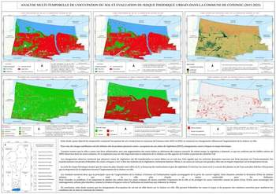
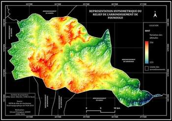
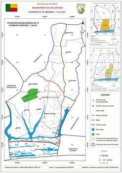
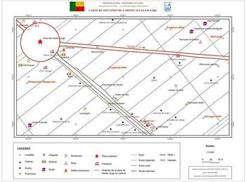
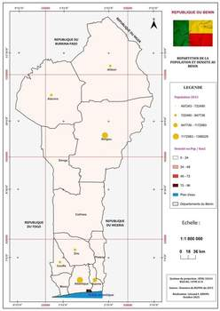
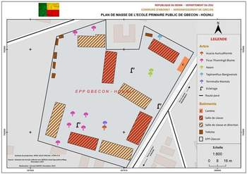
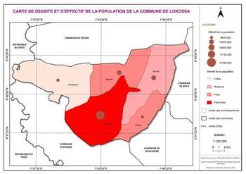
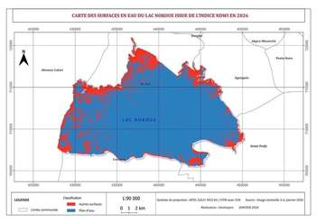
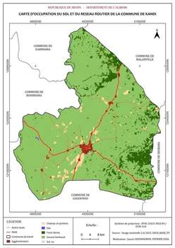
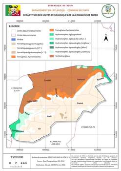
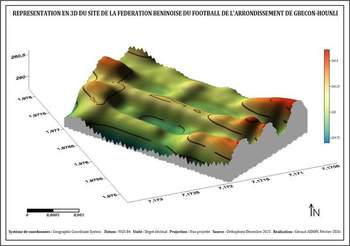
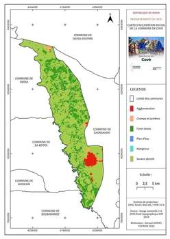
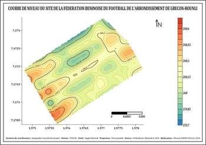
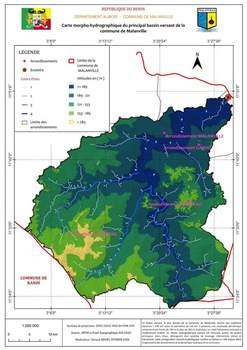
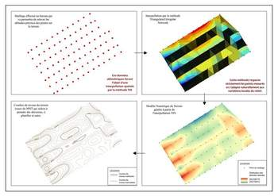
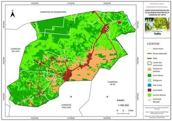
Au-delà de la rigueur technique, Géraud cultive une sensibilité artistique qui se manifeste à travers le dessin à la main. Cette pratique créative développe son sens de l'observation, sa précision gestuelle et sa capacité à représenter l'espace, des qualités qui nourrissent directement son approche cartographique et sa compréhension de la géométrie du paysage. Le dessin est pour lui un langage complémentaire à la carte, une manière d'appréhender le territoire par l'intuition et l'esthétique avant de le quantifier et de le modéliser.
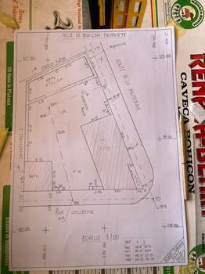
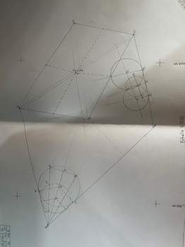
En parallèle de son parcours académique, Géraud développe une dimension humaine et sociale forte. Au-delà de la maîtrise des outils SIG et des techniques de terrain, il cultive les soft skills qui distinguent un professionnel d'excellence : la capacité à piloter des missions stratégiques, à communiquer avec impact, à s'engager pour l'intérêt collectif et à maintenir une discipline de fer dans l'effort. Ces compétences comportementales, forgées dans l'action associative et sportive, sont les piliers invisibles d'une carrière technique réussie.
Au sein de la Fédération des Étudiants Universitaires d'Abomey-Calavi, Géraud assume des responsabilités stratégiques de haut niveau. Il pilote la planification et le suivi des dossiers institutionnels, coordonne les actions entre les différentes commissions et veille à l'alignement des objectifs fédéraux avec les réalités du terrain étudiant. Ce rôle exige une rigueur de gestion de projet, une capacité de synthèse et une aptitude à la négociation multipartite, des compétences directement transposables à la conduite de projets géomatiques d'envergure.
À l'École Nationale des Travaux Publics, Géraud est chargé de la stratégie de communication. Il conçoit les supports de diffusion, pilote les canaux d'information et assure la cohérence du message institutionnel. Cette fonction développe ses compétences en rédaction technique, en conception visuelle et en gestion de l'information, des savoir-faire essentiels pour produire des rapports cartographiques percutants, des présentations claires pour les décideurs et des livrables SIG qui communiquent efficacement les résultats d'analyse spatiale.
L'implication de Géraud au sein du Léo Club traduit une conviction profonde : l'expertise technique ne prend tout son sens que lorsqu'elle est mise au service de la communauté. Ce réseau de jeunes leaders lui apprend l'écoute des besoins sociaux, l'organisation d'actions collectives et la mobilisation de ressources humaines et matérielles autour de projets solidaires. Ces compétences de coordination et de leadership collaboratif enrichissent sa capacité à animer des équipes pluridisciplinaires dans le cadre de projets de terrain géomatique.
L'engagement à la Croix-Rouge universitaire renforce chez Géraud une éthique de responsabilité et de solidarité qui guide son approche professionnelle. La rigueur opérationnelle exigée dans les interventions humanitaires, à savoir réactivité, précision logistique, travail sous pression, forge les mêmes qualités indispensables sur le terrain géomatique : capacité à réagir rapidement face aux imprévus, rigueur dans la collecte et le traitement de données critiques, et sens du service public qui motive le géomaticien engagé au service du développement territorial.
La pratique du football universitaire complète cette formation du caractère par le sport. Sur le terrain, Géraud développe une discipline personnelle exigeante, une résilience face à la pression et à l'adversité, et un esprit d'équipe fondamental. Ces qualités, engagement constant, capacité à rebondir après un échec, coordination fluide avec les coéquipiers, sont les mêmes qui garantissent le succès d'un projet de terrain géomatique : patience dans la collecte de données, persévérance dans l'analyse et collaboration efficace avec toutes les parties prenantes du projet.
Il ne se construit pas seul. Il évolue dans l'action, le collectif et la responsabilité, des valeurs qui fondent l'excellence du géomaticien engagé.
L'avenir de Géraud s'inscrit dans la continuité de sa trajectoire : une montée en compétences constante, une ouverture aux innovations technologiques et une ambition de contribution au développement territorial de l'Afrique. Il vise à approfondir son expertise en géomatique avancée, à maîtriser les technologies émergentes comme l'intelligence artificielle appliquée à l'analyse géospatiale, la télédétection par drone et les bases de données spatiales en nuage.
Sa vision est celle d'un géomaticien africain qui ne se contente pas d'appliquer des outils conçus ailleurs, mais qui contribue à les adapter, à les enrichir et à les mettre au service des réalités locales. Les défis de l'urbanisation rapide, de la gestion des ressources naturelles, de la sécurité alimentaire et de la résilience climatique en Afrique nécessitent des solutions géomatiques innovantes et contextualisées. Géraud entend être l'un des artisans de ces solutions.
À moyen terme, il projette de poursuivre sa formation par un master en géomatique ou en sciences de l'information géographique, de développer des projets de recherche appliquée et de renforcer sa contribution à la communauté géomatique africaine. Son engagement sportif, associatif et professionnel dessine le portrait d'un jeune leader complet, dont la force technique est soutenue par une éthique de l'action et du service collectif.
Tout parcours professionnel se nourrit d'ambitions clairement exprimées. Géraud formule ses attentes avec la même précision qu'il applique à l'analyse spatiale : des objectifs mesurables, des échéances réalistes et une vision stratégique ancrée dans les réalités du terrain. Ces attentes ne sont pas de simples voeux, mais des engagements personnels qui guident chacune de ses décisions professionnelles et académiques.
Maîtriser les technologies géomatiques de pointe : télédétection par drone, intelligence artificielle appliquée à l'analyse géospatiale, bases de données spatiales en nuage et webmapping. Géraud vise une expertise qui dépasse la simple utilisation des outils pour atteindre la capacité de concevoir des solutions innovantes adaptées aux défis territoriaux africains. Il attend de lui-même une rigueur méthodologique irréprochable et une veille technologique constante.
Contribuer concrètement au développement territorial du Bénin et de l'Afrique par des projets SIG à fort impact. Géraud attend de ses projets qu'ils produisent des résultats mesurables : meilleure gestion des ressources naturelles, urbanisme durable, sécurité alimentaire renforcée et résilience climatique améliorée. Il refuse l'approche théorique déconnectée du terrain et privilégie les solutions appliquées.
Poursuivre sa montée en compétences par un master en géomatique ou en sciences de l'information géographique, et par des certifications professionnelles reconnues internationalement. Géraud considère que la formation ne s'arrête jamais : chaque projet est une occasion d'apprendre, chaque échec une opportunité de progresser, chaque collaboration une source de connaissances nouvelles.
Développer un réseau professionnel solide dans la communauté géomatique africaine et internationale. Géraud attend des collaborations qui enrichissent mutuellement les partenaires, qui croisent les expertises et qui génèrent des innovations. Il cherche à travailler avec des professionnels passionnés, des institutions engagées et des équipes pluridisciplinaires capables de relever les défis complexes de l'aménagement du territoire.
Ne pas se contenter d'appliquer des outils conçus ailleurs, mais contribuer à les adapter, à les enrichir et à les contextualiser pour les réalités africaines. Géraud attend de lui-même qu'il devienne un créateur de solutions géomatiques, pas seulement un utilisateur. Il vise à développer des méthodologies et des outils qui répondent spécifiquement aux besoins des territoires béninois et ouest-africains.
Exercer le métier de géomaticien avec une éthique professionnelle irréprochable : rigueur dans la collecte et le traitement des données, transparence dans les méthodes d'analyse, honnêteté dans la présentation des résultats et responsabilité dans l'usage des informations géographiques. Géraud attend de lui-même qu'il soit un professionnel de confiance, dont les livrables font autorité.
Pour toute collaboration, projet ou échange professionnel, Géraud est joignable par les canaux suivants. N'hésitez pas à le contacter pour des missions de géomatique, des projets SIG, des formations ou des partenariats liés à l'aménagement du territoire et au développement durable.
Le parcours de Géraud Finangnon AIDOFI est celui d'un jeune professionnel béninois qui a choisi de mettre la technologie au service du territoire. De ses premières années de formation en topographie à sa licence professionnelle en géomatique, en passant par ses engagements associatifs et sportifs, il a construit un profil complet où compétence technique, leadership et éthique professionnelle se renforcent mutuellement.
Chaque projet réalisé, de la cartographie de la commune de Zè à l'analyse spatiale pour la gestion des déchets, de l'identification des zones favorables à la culture du maïs à la formation QGIS, témoigne d'une même exigence : transformer les données en décisions, les cartes en actions, les analyses en impacts concrets pour les communautés.
Géraud ne se définit pas seulement par ce qu'il sait faire, mais par ce qu'il veut construire : un avenir où la géomatique africaine innove, s'adapte et répond aux défis réels du continent. Un avenir où chaque coordonnée GPS, chaque couche thématique et chaque carte produite contribue à un développement territorial plus juste, plus durable et plus résilient.